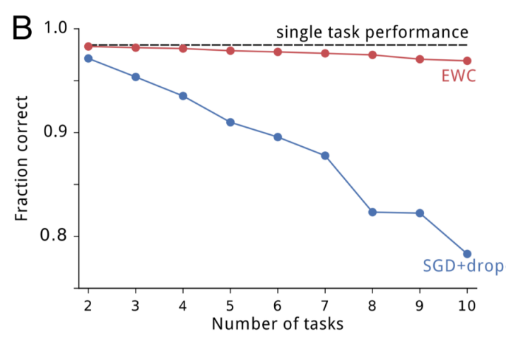

Introduction
I've found that the overwhelming majority of online information on artificial intelligence research falls into one of two categories: the first is aimed at explaining advances to lay audiences, and the second is aimed at explaining advances to other researchers. I haven't found a good resource for people with a technical background who are unfamiliar with the more advanced concepts and are looking for someone to fill them in. This is my attempt to bridge that gap, by providing approachable yet (relatively) detailed explanations, starting with the aforementioned paper.
Motivation
One of the critical steps towards artificial general intelligence is the ability to continually learn - that is, an agent should be capable of learning new tasks without forgetting how to perform old tasks. Yet this simple property is something that artificial neural networks have historically failed to display. McCloskey and Cohen (1989) first noted this inability by showing that a neural network trained to add 1 to a digit, and then trained to add 2 to a digit, would be unable to add 1 to a digit. They labeled this problem catastrophic forgetting due to neural networks' tendencies while learning a new task to quickly overwrite, and thus lose, the parameters necessary to perform well at a previous task.
Attempts at overcoming catastrophic forgetting have been only moderately successful. Two earlier papers achieved good performance on a mixture of tasks by ensuring that data from all tasks are available during training. However, if tasks are introduced sequentially, this multitask learning paradigm can only perform well by maintaining an episodic memory system to record and replay the training data. This approach, called system-level consolidation, is limited by requiring a memory system commensurate in size to the number of total memories being stored, which grows as the number of tasks grows.
However, you probably intuitively feel that continual learning with a huge memory bank is misguided - after all, you've learned how to talk in addition to how to walk, all without maintaining memories of learning to walk. How is the mammalian brain capable of achieving this? Evidence from Yang, Pan and Gan (2009) suggests that learning takes place through the formation and elimination of postsynaptic dendritic spines over time. Dendritic spines are "protrusions [...] from a neuron's dendrite that typically receive input from a single axon at the synapse," as shown below:

Specifically, the researchers looked at mouse brains as the mice learned movement strategies specific to new tasks. As the mice learned how to move optimally, the researchers observed a significant increase in spine formation. To eliminate the alternative explanation that exercise could have caused the formation of the spines, the researchers had a separate group of mice exercise; no spine formation was induced in this group. The researchers then noticed that while most newly formed spines were eliminated, a small fraction of newly formed spines remained. Additional research in 2015 demonstrated that when specific spines are erased, the corresponding skill(s) are forgotten.
Kirkpatrick et. all state in Overcoming catastrophic forgetting in neural networks, "These experimental findings [...] suggest that continual learning in the neocortex relies on task-specific synaptic consolidation, whereby knowledge is durably encoded by rendering a proportion of synapses less plastic and therefore stable over long timescales." Can catastrophic forgetting be overcome by using a similar approach of varying individual neuron's plasticity depending on each neuron's importance?
The rest of this paper is spent deriving and demonstrating their preliminary answer: yes.
Intuition
Suppose we have two tasks, A and B, that we would like a neural network to sequentially learn. When we speak of a neural network learning a task, what we really mean is that the neural network adjusts its weights and biases (collectively referred to as the parameters or $\theta$ ) so that the neural network performs well at the task. Previous work has shown that for large networks, many different configurations of $\theta$ will result in similar performance. Ordinarily, the implication is that the network is overparameterized, but we can make use of this: the overparameterization makes it likely that there is a configuration for task B that is close to the configuration for task A. The authors provide a helpful graphic:

In the picture, $\theta_A^*$ refers to the configuration of $\theta$ that performs well at A. $\theta_A^*$ will be the best configuration of $\theta$ in a neighborhood, but there are a number of configuations in close proximity that will also perform quite well on A; the grey ellipsoid represents the set of these configurations. An ellipsoid is used because some weights and biases can be varied more than others for a comparable increase in error. If the network was subsequently set to learn task B without any interest in remembering task A (i.e. following the error gradient for task B), the network would shift its parameters in the direction of the blue arrow. The optimal solution for B would have a similar error ellipsoid, represented above by the cream ellipsoid.
However, we want to remember task A. If we naively try to make all parameters somewhat rigid, we follow the green arrow and we perform poorly on both tasks A and B. The superior approach is to make parameters more rigid or less rigid depending on their importance; by doing so, the network shifts its parameters in the direction of the red arrow, and in doing so, finds a configuration that performs well at both tasks A and B. The authors call this algorithm Elastic Weight Consolidation (EWC). The name comes from synaptic consolidation, combined with an "elastic" anchoring of parameters (the constraint limiting parameters to the previous solution is quadratic and thus is spring-like).
Mathematics
At this point, there are two questions. First, why is the anchoring of parameters quadratic? Second, how do we determine which parameters are "important?"
Before answering either, it's important to understand what training a network means from a probabilistic perspective. Supposing we have some data $\mathcal{D}$, we'd like to find the most probable parameters given the data, which is expressed as $p(\theta | \mathcal{D})$. (TODO: is this the same as argmax theta of p(d | theta)?) We can calculate this conditional probability using Bayes' rule:
If we apply a log-transform, the equation can be rewritten as follows:
Suppose that the data $\mathcal{D}$ are really composed of two independent parts, (TODO: is independence an acceptable assumption?) data $\mathcal{D}_A$ for task A and data $\mathcal{D}_B$ for task B. The logic works for more than two tasks, but let's keep things simple. Using the definition of independence, we can rewrite our equation:
Look at the middle three terms on the right side of (3). Do they look familiar? They should. Those three terms are the right side of equation (2), but with $\mathcal{D}$ replaced by $\mathcal{D}_A$. To restate that in English, those three terms are equivalent to the log of the conditional probability of the network's parameters given task A's data. Using that, we reach the following equation:
Now, let's pause for a second to interpret equation (4). The left side is still telling us how to calculate $p(\theta | \mathcal{D})$ for the entire dataset, but all the information learned when solving task A is contained in the conditional probability $p(\theta | \mathcal{D}_A)$. This conditional probability can tell us which parameters are important in solving task A.
The next step is non-obvious, and densely communicated: "The true posterior probability is intractable, so, following the work on the Laplace approximation by Mackay (19), we approximate the posterior as a Gaussian distribution with mean given by the parameters $\theta_A^*$ and a diagonal precision given by the diagonal of the Fisher information matrix $F$."
Let's break that down. First, why is the true posterior probability intractable? The paper doesn't explain, but the answer is that Bayes' rule tells us that $p(\theta | \mathcal{D}_A)$ depends on $p(\mathcal{D}_A) = \int p(\mathcal{D}_A | \theta ') p(\theta ') d \theta '$, where $\theta '$ is a possible configuration of parameters in the parameter space. Generally, that integration doesn't have a closed form solution, leaving numerical approximation as the alternative. Numerical approximation has exponential time complexity with respect to the number of parameters, so for deep neural networks with hundreds of millions of parameters or more, numerical approximation is just not practical.
Next, what is Mackay's work on Laplace approximation and how is it relevant here? I skimmed the paper and this is what I suspect is the answer. Rather than numerically approximating the posterior distribituion, we model it as a multivariate normal distribution using $\theta_A^*$ as the means. What about the variance? We're going to specify the variance for each variable as precision, the reciprocal of the variance. To calculate the precision, we're going to use the Fisher information matrix $F$. Fisher information is "a way of measuring the amout of information that an observable random variable X carries about an unknown parameter $\theta$ upon which the probability of X depends." In our case, we're interested in measuring the amount of information each datum from $D_A$ carries about $\theta$. The Fisher information matrix is much more feasible to calculate than numerical approximation, which makes it a useful tool.
As a result, we can define a new loss function for our network to train on task B following training on task A. Let $\mathcal{L}_B(\theta)$ be the loss for task B only. If we index our parameters with $i$, and choose a scalar $\lambda$ to influence the importance of task A against task B, the function $\mathcal{L}$ to minimize in EWC is:
The authors claim that EWC has a run time that is linear with respect to both the number of network parameters and the number of training examples. (TODO: explain why this is the case)
Experiments and Results
Random Patterns
The first test for EWC was simply to see whether it was capable of remembering simple patterns longer than gradient descent (GD). The researchers trained a network to associate random binary patterns to binary outcomes. If the network was shown a previously-seen binary pattern, the network was judged to have "remembered" the pattern if its signal-to-noise ratio exceeds a threshold. This simple test was used because it has an analytical solution. As the number of patterns increased, both EWC and GD performed near their ideal answers. However, EWC was capable of remembering a much higher number of patterns than GD, as the image below shows:

MNIST
The second test the authors threw at EWC was a modified version of MNIST. Rather than using the data as given, they generated three random permutations and applied each permutation to each image in the dataset. Task A would be to classify digits from MNIST images transformed by the first permutation. Task B would be to classify digits from images transformed by the second permutation, and similarly for C. The authors constructed a fully connected deep neural network and sequentially trained the network on tasks A, B and C while testing the performance of the network on tasks A (after A was finished training), B (after B was finished training), and C (after C was finished training). Training was performed independently using stochastic gradient descent (SGD), uniform parameter-rigidity using L2 regularization and EWC. These are their results:

As expected, SGD displayed catastrophic forgetting; performance on task A quickly degraded following training on B, and degraded further following training on C. Making parameters more rigid maintained performance on the first task, but at the expense of being unable to learn subsequent tasks. EWC, however, remembered how to perform previous tasks while still successfully learning new tasks. As the number of tasks increase, EWC is still capable of maintaining relatively good performance, whereas SGD with dropout regularization continues to decline, as displayed below:
Atari 2600
In an earlier paper, DeepMind demonstrated that Deep Q Networks (DQNs) could achieve superhuman performance across a variety of Atari 2600 games when trained and tested on one game at a time. To see how EWC performs at continual learning in this more challenging reinforcement learning context, the researchers modified the DQN agents to use EWC. However, they needed to make an additional modification: in mammalian continual learning, higher-level systems are necessary to determine which task the agent is current learning, but the DQN agents had no way of making such a determination. To address this, the researchers added an online clustering algorithm based on the forget-me-not (FMN) process, and allowed the DQN agents to maintain separate short-term memory buffers for each inferred task.
This results in the DQN agents learning across two timescales. In the short term, a DQN agent can learn from the experience replay mechanism using an optimizer like SGD (in this case, the researchers used RMSProp). In the long term, the DQN agent consolidates what it learns across tasks by using EWC. Ten games were randomly chosen from the pool of Atari games in which DQN achieved human results (nineteen total), and the agents were trained by being exposed to individual games for an experience of time, as specified below:

The researchers compared the performance of three different DQN agents. The blue agent made no use of EWC. The red agent used EWC in conjunction with the forget-me-not task identifier. The tan agent used EWC and was provided with the true task label. Achieving human-level performance on one task was normalized to a score of 1. As you can see, EWC approached near-human performance across the ten games, whereas non-EWC agents never learned more than one task. Whether the agent was given a true task label or had to infer the task didn't make much difference, but I think that says more about the success of the FMN process than it does about EWC's success.

This next part is really cool. As you saw above, EWC doesn't achieve human-level performance across the ten tasks. Why might that be? One plausible explanation is that the Fisher information matrix might be a poor estimate of parameters' importance. To empirically check this, the authors tried playing with the weights of an agent trained on just one game. Regardless of the game, they observed the following pattern: if weights were influenced by a uniform random perturbation, as the size of the perturbation increased, the agent's performance (again, normalized to 1) declined, but if weights were influenced by a perturbation shaped by the inverse of diagonal of the Fisher information, then the score remained steady for larger perturbations. This confirms that the Fisher information is a relatively good measure of identifying truly important parameters as important.
But then, the authors tried perturbing in the null space. This should have had no effect (TODO: WHY?), but instead, the authors saw similar results to pertubring in the inverse Fisher space. This suggests that using the Fisher information matrix leads to labeling some important parameters as unimportant - "It is therefore likely that the chief limitation of the current implementation is that it underestimates parameter uncertainty."

Discussion
Bayesian Interpretation
EWC has a very nice Bayesian interpretation given by the authors: "Formally, when there is a new task to be learned, the network parameters are tempered by a prior which is the posterior distribution on the parameters given data from the previous task(s). This enables fast learning rates on parameters that are poorly constrained by the previous tasks and slow learning rates for those that are crucial."
Network Overlap
Near the beginning, I mentioned that overparameterization of neural networks allows for EWC to achieve superior performance. It's reasonable to ask whether these neural networks are squeezing out better performance by dividing the network into specific sections for each task, or if the network is efficiently using its capacity by sharing representation. To answer this question, the authors measured the overlap between pairs of tasks' respective Fisher information matrices (Fisher overlap). For tasks that were highly similar (e.g. two random permutations that differed only by a few bits), the Fisher overlap was quite high. Even for tasks that were dissimilar, the Fisher overlap was well-above 0. As the depth of the network increased, so too did the Fisher overlap. The image below shows this result:

Theories of Synaptic Plasticity
The authors conclude by discussing how EWC might inform computational proposals of synaptic plasticity. One theory, cascade, attempt to build models of synaptic states to model plasticity and stability. Although EWC is incapable of relaxing parameters over time and thus is unable to forget previous information, both EWC and cascade agree that memory stability is extended by making synapses less plastic. A more recent proposal suggests that synapses store their uncertainty about their current weights in addition to storing the actual weights themselves. EWC is an extension of that idea: in EWC, each synapse stores three values: its weight, its mean, and its variance.
Summary
- Learning tasks in succession without forgetting is necessary for intelligence
- Research shows synaptic consolidation in mammalian brains helps achieve continual learning
- EWC mimics synaptic consolidation in artificial neural networks by making important parameters less plastic
- EWC as applied in neural networks displays superior performance to SGD and uniform parameter stability in a range of domains
- EWC provides prima facie evidence that weight consolidation is fundamental to continual learning
Notes
I appreciate any and all feedback. If I've made an error or if you have a suggestion, you can email me or comment on the Reddit or HackerNews threads.